vignettes/VisiumHD_Convenience_Function_Kidney.Rmd
VisiumHD_Convenience_Function_Kidney.RmdThe VisiumHD Rhesus Macaque Kidney dataset that will be used for this tutorial can be downloaded here
Then, untar the download to before moving on to the next steps of the tutorial.
Ensure that the Giotto Suite is correctly installed and configured.
# Verify that the Giotto Suite is installed.
if(!"Giotto" %in% installed.packages()) {
pak::pkg_install("giotto-suite/Giotto")
}
library(Giotto)
# check if the Python environment for Giotto has been installed.
genv_exists <- Giotto::checkGiottoEnvironment()
if(!genv_exists){
# The following command need only be run once to install the Giotto environment.
Giotto::installGiottoEnvironment()
}Set up the working directory and optionally specify a custom Python executable path if not using the default Giotto environment.
First, set the path to input dataset. For Space Ranger V4 outputs,
you can provide either the unpacked path to binned_outputs
or segmented_outputs. For older versions of Space Ranger,
provide the path to unpacked directory of combined outputs.
*_path params are available if finer control over where
individual pieces of data are read from is needed. For this tutorial,
the binned_outputs directory will be used.
Then, set the path to save the results of the analysis including plots. You can also specify the path to Python executable.
Create the giotto instructions with these paths.
save_plot = TRUE and return_plot = FALSE will
save plots in the results folder instead of showing them in the
viewer.
data_path <- "/path/to/data/binned_outputs"
results_folder <- "path/to/results"
python_path <- NULL # alternatively, "/local/python/path/python" if desired.
instructions <- createGiottoInstructions(
save_dir = results_folder,
save_plot = TRUE,
show_plot = TRUE,
return_plot = TRUE,
python_path = python_path
)To create a Giotto object, you can either use visiumHD reader
function importVisiumHD() or read the data manually.
However, in this tutorial, we will introduce the use of the convenience
function createGiottoVisiumHDObject(), which helps create
Giotto object directly from a raw VisiumHD dataset.
Below are the explanations for parameters:
visiumhd_dir: Path to unpacked directory containing
VisiumHD outputs.
bin: The size of the bin to load expression and
spatial locations from. (2, 8, or 16)
load_transcripts: Set this param TRUE
only if you want to load in bin=2 micron data as transcripts
information. This will be very memory expensive, so it is recommended to
use filter or take subsets of smaller regions.
By default, the entire ‘raw’ data will be loaded.
tissue_only: Setting this param TRUE will
only load information tagged as in_tissue (in
tissue_positions.parquet file)You can filter for ranges of the visiumHD binning array or mapped pixel coordinates based using the parameters:
array_subset_row, array_subset_col:
Numeric vectors of length=2 with min/max of array rows or columns to
keep.
pxl_subset_row, pxl_subset_col: Numeric
vectors of length=2 with min/max of fullres image mapped rows or columns
to keep. Keep in mind, pxl_subset_row is inverted.
A single polygon filter can also be applied, only
loading in bins that are overlapped by the polygon. The percent of bin
coverage needed for a bin to be selected is the param
filter_coverage_cutoff which defaults to 0.5.
filter: A SpatVector, sf,
or giottoPolygon to spatially filter the data by.
filter_coverage_cutoff: Numeric between 0 and 1.
Minimal fraction of pixel coverage by filter in order to be
selected.
Specific bin barcodes (if pre-known) can also be selected for using
barcodes.
micron: Data is loaded by default based on the pixel
mapped space. This can be converted to load by microns by setting
micron = TRUE.The bin 2 data can be loaded in as an approximation of transcript detection points data by setting:
load_transcripts = TRUEThis is not done by default as it is very memory intensive, and filtering to a smaller region first is recommended.
A set of tessellated bins can be set up with either hex or square binning by setting:
create_tessellated_polys = TRUEThese are also not created by default.
The `hires.png` image is loaded in by default. If the fullres microscope image is available, then it can be loaded separately.
img <- createGiottoLargeImage("/path/to/fullres")
# for micron scaling:
reader <- importVisiumHD(data_path) # load scalefactor with low level importer object
px2um <- reader$load_scalefactors()$microns_per_pixel
img <- rescale(img, px2um, x0 = 0, y0 = 0)
# add to giotto object (if gobject is `g`)
g <- setGiotto(g, img)We can first try loading in the 16 micron bin data. This is loaded in as a set of aggregated data with expression matrix and spatial locations. No polygons are generated by default.
g <- createGiottoVisiumHDObject(
visiumhd_dir = data_path,
bin = 16,
instructions = instructions
)We can calculate some statistics and visualize using
spatPlot2D() for aggregate data.
g <- addStatistics(g, expression_values = "raw")
spatPlot2D(g,
cell_color = "total_expr",
color_as_factor = FALSE,
gradient_style = "sequential",
point_size = 0.1,
point_shape = "no_border"
)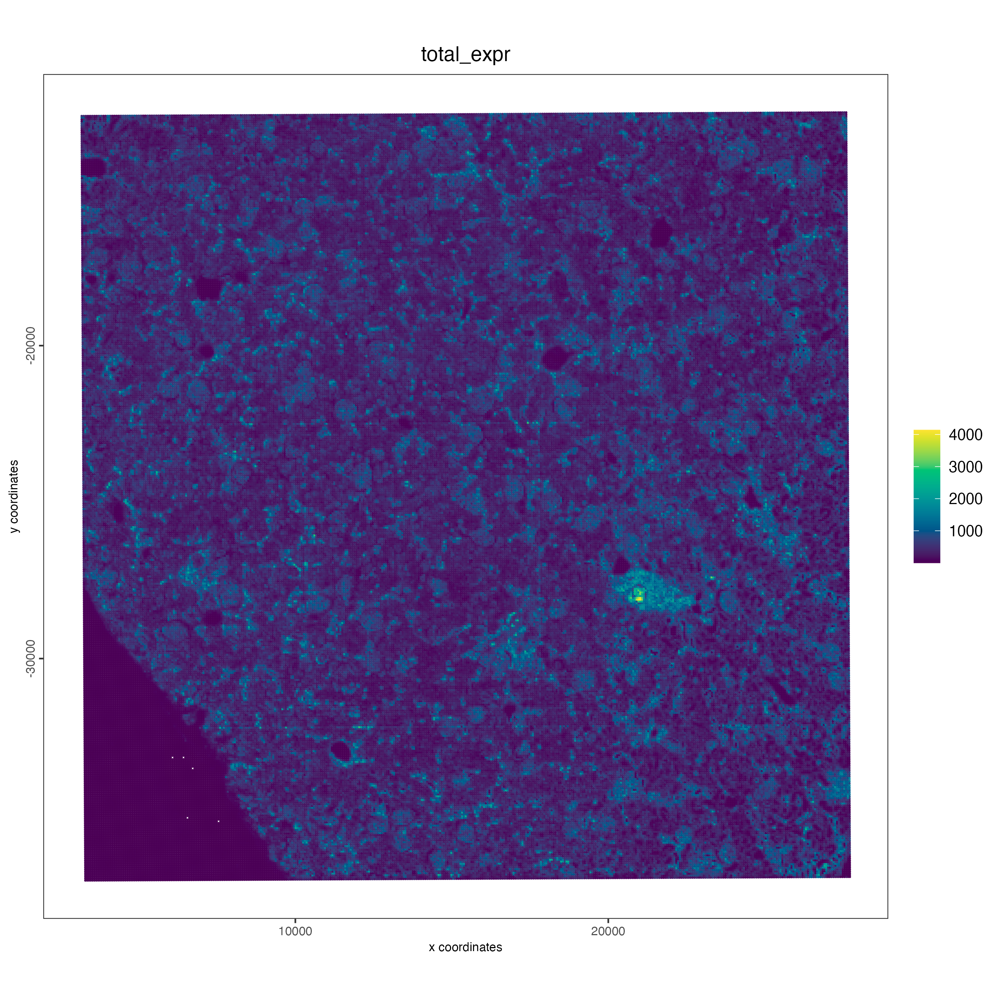
As previously mentioned, loading the transcripts will require a very large memory. Therefore, it might be more practical to take a subset of the dataset. For this exercise, we will arbitrarily define the bounds for the subset.
bounds <- ext(5000, 20000, -20000, -5000)
bounds_poly <- terra::as.polygons(bounds)
giotto_bounds <- createGiottoPolygon(bounds_poly, name="bounds")The arbitrary bound is represented as a black box in the Giotto image below.
giotto_img <- getGiottoImage(g, name = "image")
r <- giotto_img@raster_object
plot(r)
plot(bounds, add = TRUE, border = "black", lwd = 2)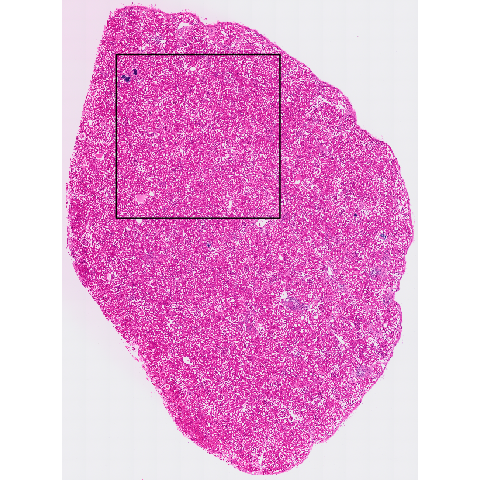
Now, using the bound created earlier, we will create hexagon
aggregation. Other polygon shapes are also available, including squares
and triangles. To choose a different polygon shape, use the
tessellate_shape parameter. By default, hexagon with size
400 will be created if create_tessellated_polys = TRUE. We
will also load the transcripts at this time, with
load_transcripts = TRUE.
g <- createGiottoVisiumHDObject(
visiumhd_dir = data_path,
bin = 2,
create_tessellated_polys = TRUE,
load_transcripts = TRUE,
filter = giotto_bounds,
instructions = instructions
)Once Giotto object is created, you can add spatial centroid locations to ensure the corresponding spatial locations are generated for the new hexagon400 bin.
g <- addSpatialCentroidLocations(
g,
poly_info = "hexagon400",
return_gobject = TRUE
)With this, you should be able to create simple visualizations such as this showing the hexagon bins with spatial distribution of gene expression.
feature_data <- fDataDT(g)
spatInSituPlotPoints(g,
show_image = TRUE,
feats = list("rna" = feature_data$feat_ID[10:20]),
show_legend = TRUE,
spat_unit = "hexagon400",
point_size = 2,
show_polygon = TRUE,
use_overlap = FALSE,
polygon_feat_type = "hexagon400",
polygon_bg_color = NA,
polygon_color = "black",
polygon_line_size = 0.5,
expand_counts = TRUE,
count_info_column = "count",
jitter = c(25, 25),
xlim = c(15000, 20000),
ylim = c(-20000, -15000)
)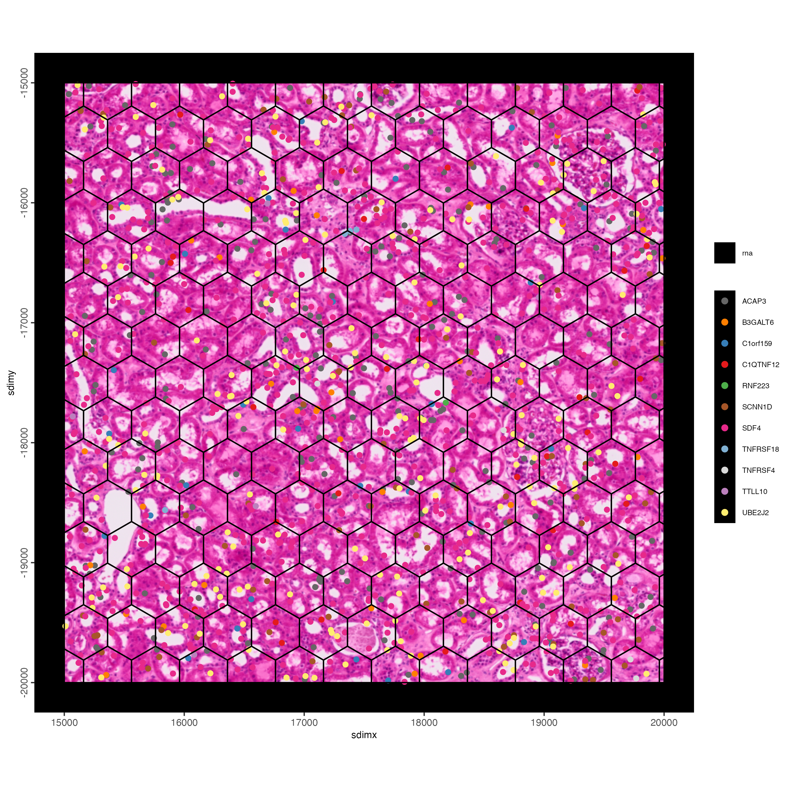
At the moment the giotto points (transcripts) and polygons (hexagons) are two separate layers of information. Here we will determine which transcripts overlap with which hexagons so that we can aggregate the gene expression information and convert this into a gene expression matrix (genes-by-hexagons) that can be used in default spatial pipelines.
# calculate overlap between points and polygons
g <- calculateOverlap(g,
spatial_info = "hexagon400",
feat_info = "rna")
showGiottoSpatialInfo(g)
# convert overlap results to bin by gene matrix
g <- overlapToMatrix(g,
poly_info = "hexagon400",
feat_info = "rna",
name = "raw")
# Set the active spatial unit to be "hexagon400"
activeSpatUnit(g) <- "hexagon400"
# filter on gene expression matrix
g <- filterGiotto(g,
expression_threshold = 1,
feat_det_in_min_cells = 5,
min_det_feats_per_cell = 25)
# normalize and scale gene expression data
g <- normalizeGiotto(g,
scalefactor = 1000,
verbose = TRUE)
# add cell and gene statistics
g <- addStatistics(g)
# each dot here represents a 200x200 aggregation of spatial barcodes (bin size 200)
spatPlot2D(g,
cell_color = "nr_feats",
color_as_factor = FALSE)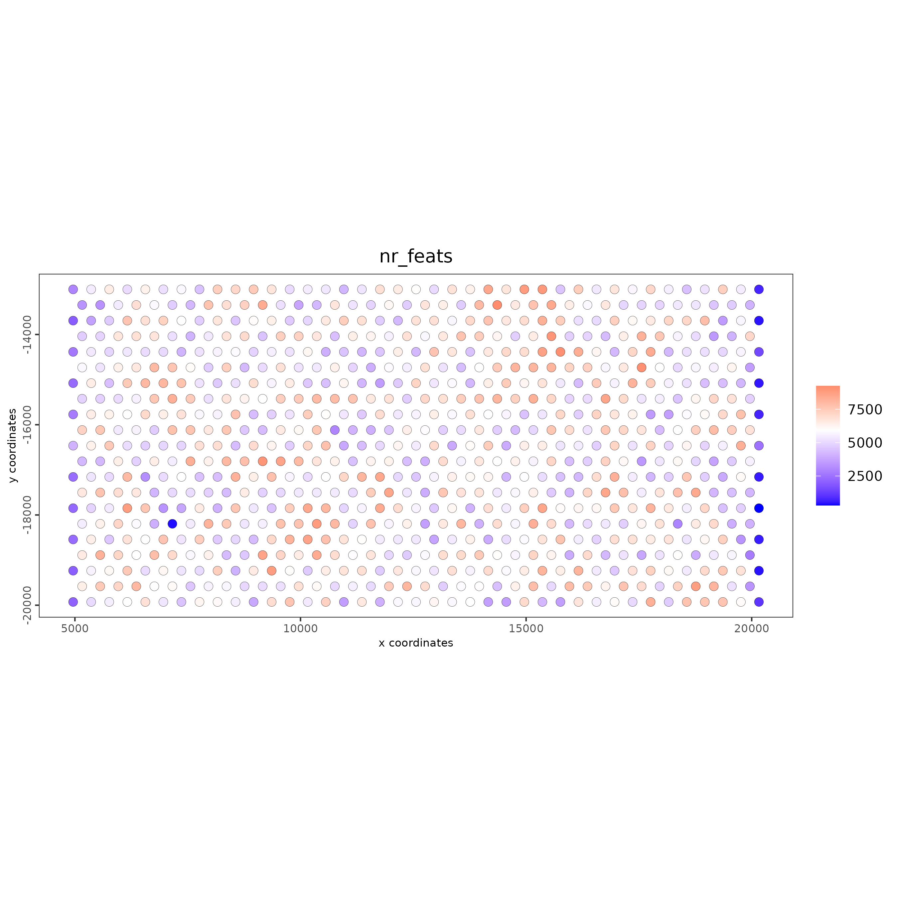
# we can also use spatial polygon (hexagon) tiles
spatInSituPlotPoints(g,
show_image = FALSE,
feats = NULL,
show_legend = FALSE,
spat_unit = "hexagon400",
point_size = 0.1,
show_polygon = TRUE,
use_overlap = TRUE,
polygon_feat_type = "hexagon400",
polygon_fill = "nr_feats",
polygon_fill_as_factor = FALSE,
polygon_bg_color = NA,
polygon_color = "white",
polygon_line_size = 0.1)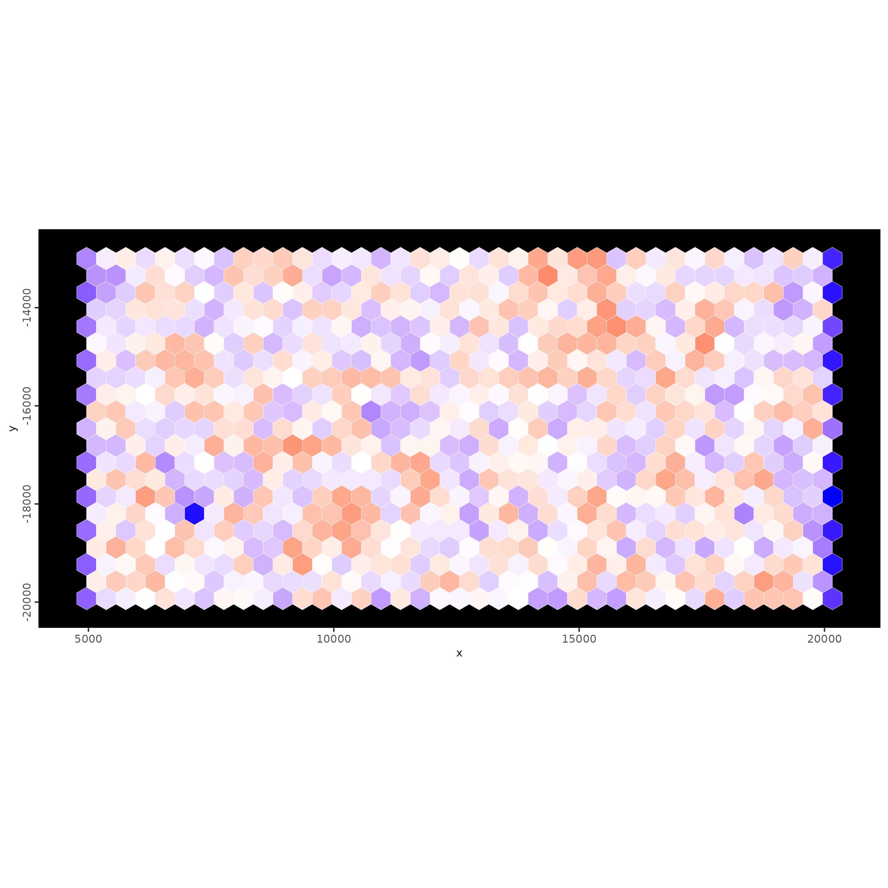
g <- calculateHVF(g,
zscore_threshold = 1)
g <- runPCA(g,
expression_values = "normalized",
feats_to_use = "hvf")
screePlot(g, ncp = 30)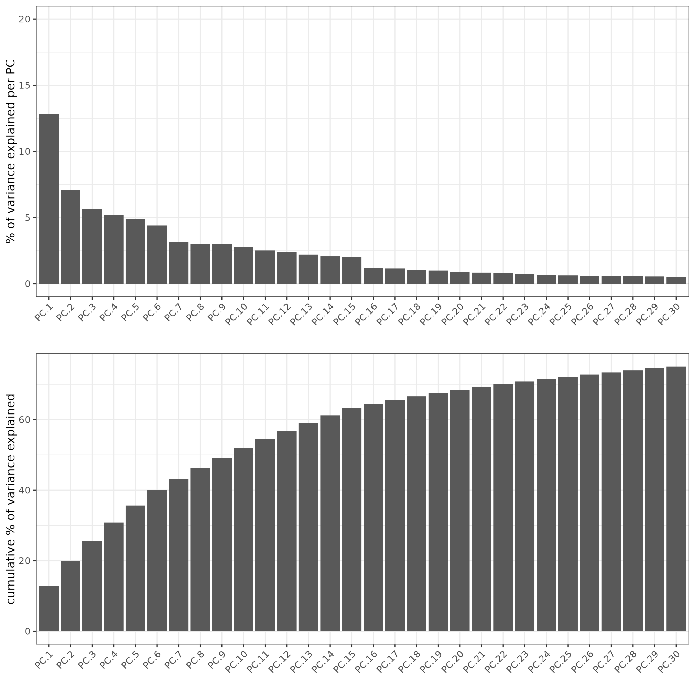
plotPCA(g)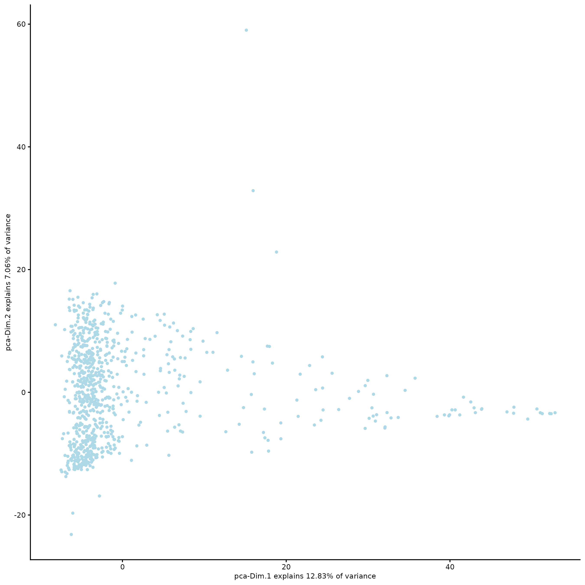
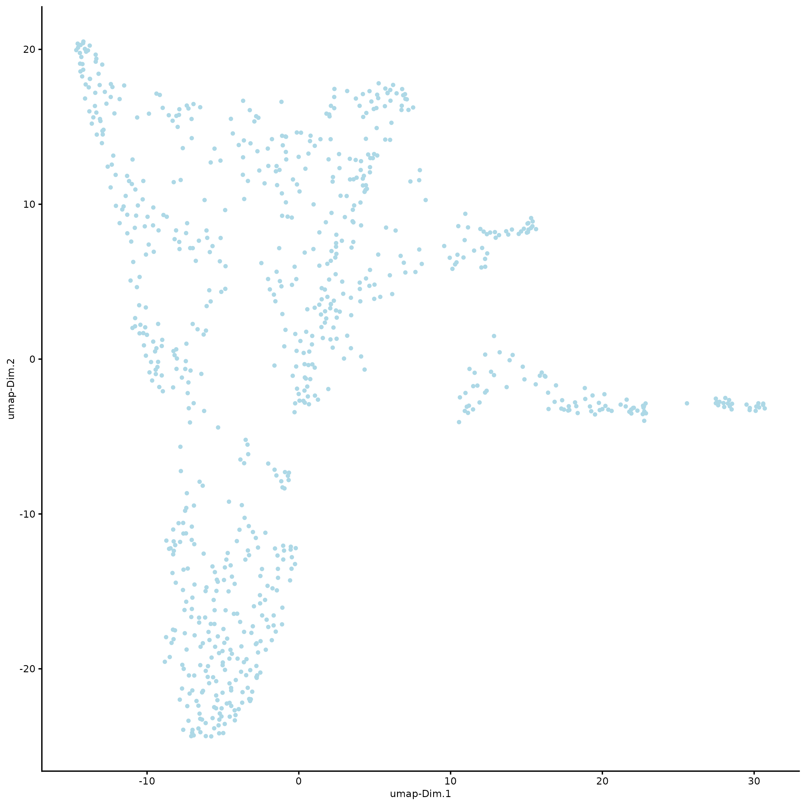
# sNN network (default)
g <- createNearestNetwork(g,
dimensions_to_use = 1:14,
k = 5)
## Leiden clustering ####
g <- doLeidenClusterIgraph(g,
resolution = 0.5,
n_iterations = 1000,
spat_unit = "hexagon400")
plotUMAP(g,
cell_color = "leiden_clus",
point_size = 1.5,
show_NN_network = FALSE,
edge_alpha = 0.05)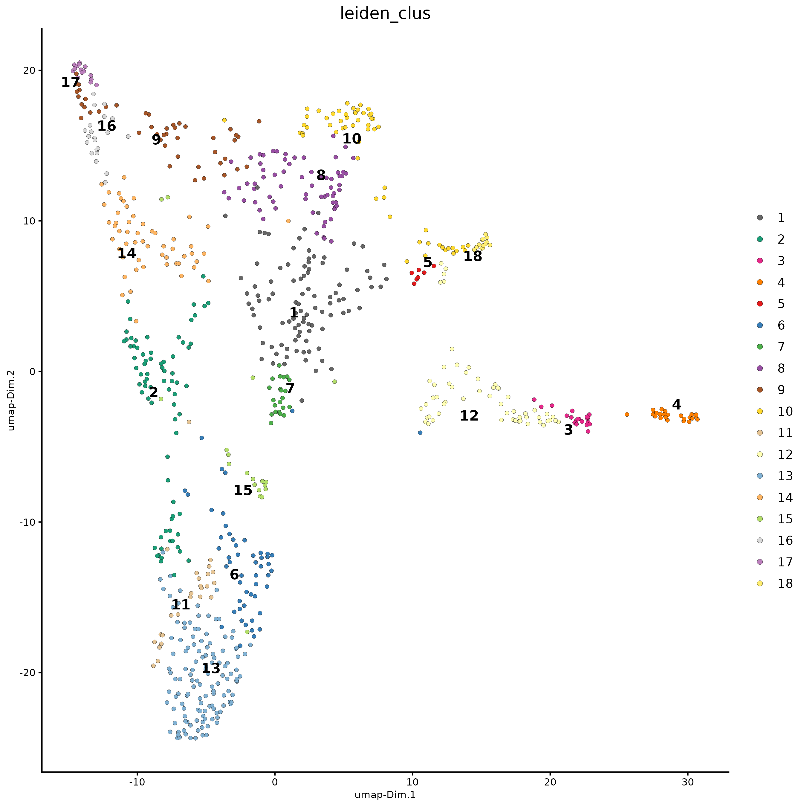
spatInSituPlotPoints(g,
show_image = FALSE,
feats = NULL,
show_legend = TRUE,
spat_unit = "hexagon400",
point_size = 0.25,
show_polygon = TRUE,
use_overlap = FALSE,
polygon_feat_type = "hexagon400",
polygon_fill_as_factor = TRUE,
polygon_fill = "leiden_clus",
polygon_color = "black",
polygon_line_size = 0.3)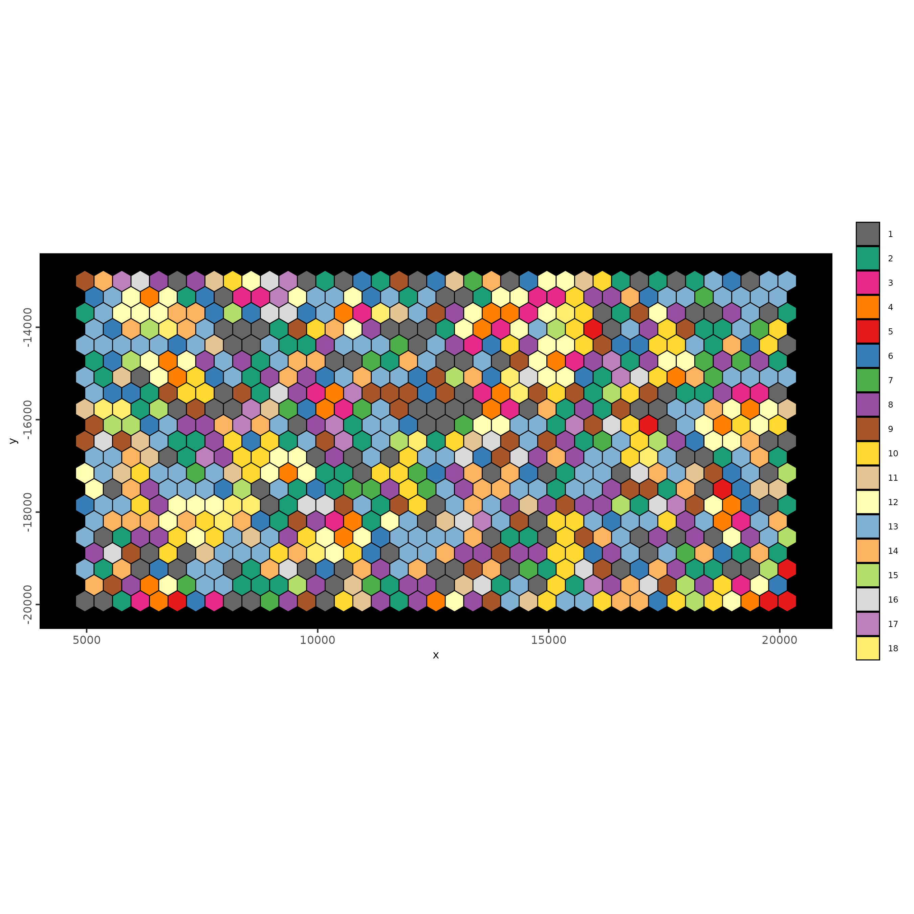
Hexagon 400 results in very coarse information about the tissue. To use a higher resolution, you could create a hexagon 100 bins. We are going to continue using the bounds we set earlier to prevent memory issues.
In this analysis, we will create a new spatial unit with the tessellate function. Then, we will calculate the centroid locations, even though this is optional. We can also compute the overlap between transcript and polygon locations. This overlap data can be converted to a gene-by-polygon matrix.
bounds <- ext(5000, 20000, -20000, -5000)
bounds_poly <- terra::as.polygons(bounds)
giotto_bounds <- createGiottoPolygon(bounds_poly, name="bounds")
g <- createGiottoVisiumHDObject(
visiumhd_dir = data_path,
bin = 2,
create_tessellated_polys = TRUE,
tessellate_shape = "hexagon",
tessellate_shape_size = 100,
load_transcripts = TRUE,
filter = giotto_bounds,
instructions = instructions
)
g <- addSpatialCentroidLocations(
g,
poly_info = "hexagon100",
return_gobject = TRUE
)
feature_data <- fDataDT(g)
spatInSituPlotPoints(g,
show_image = TRUE,
feats = list("rna" = feature_data$feat_ID[10:20]),
show_legend = TRUE,
spat_unit = "hexagon100",
point_size = 2,
show_polygon = TRUE,
use_overlap = FALSE,
polygon_feat_type = "hexagon100",
polygon_bg_color = NA,
polygon_color = "black",
polygon_line_size = 0.2,
expand_counts = TRUE,
count_info_column = "count",
jitter = c(25, 25),
xlim = c(15000, 16000),
ylim = c(-20000, -19000)
)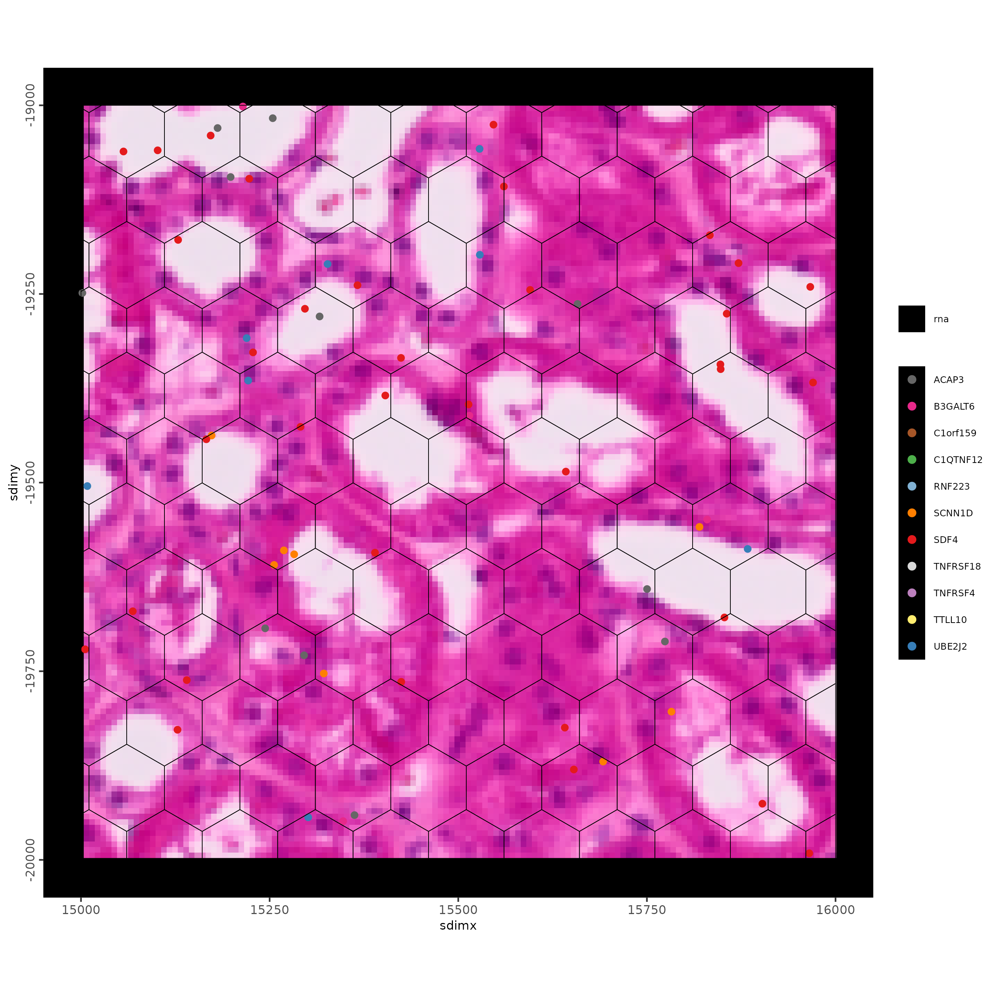
g <- calculateOverlap(g,
spatial_info = "hexagon100",
feat_info = "rna")
g <- overlapToMatrix(g,
poly_info = "hexagon100",
feat_info = "rna",
name = "raw")
activeSpatUnit(g) <- "hexagon100"
g <- filterGiotto(g,
spat_unit = "hexagon100",
expression_threshold = 1,
feat_det_in_min_cells = 10,
min_det_feats_per_cell = 10)
g <- normalizeGiotto(g,
spat_unit = "hexagon100",
scalefactor = 1000,
verbose = TRUE)
g <- addStatistics(g,
spat_unit = "hexagon100")We can now perform PCA and UMAP.
g <- calculateHVF(g,
spat_unit = "hexagon100",
zscore_threshold = 1)
g <- runPCA(g,
spat_unit = "hexagon100",
expression_values = "normalized",
feats_to_use = "hvf")
plotPCA(g,
spat_unit = "hexagon100")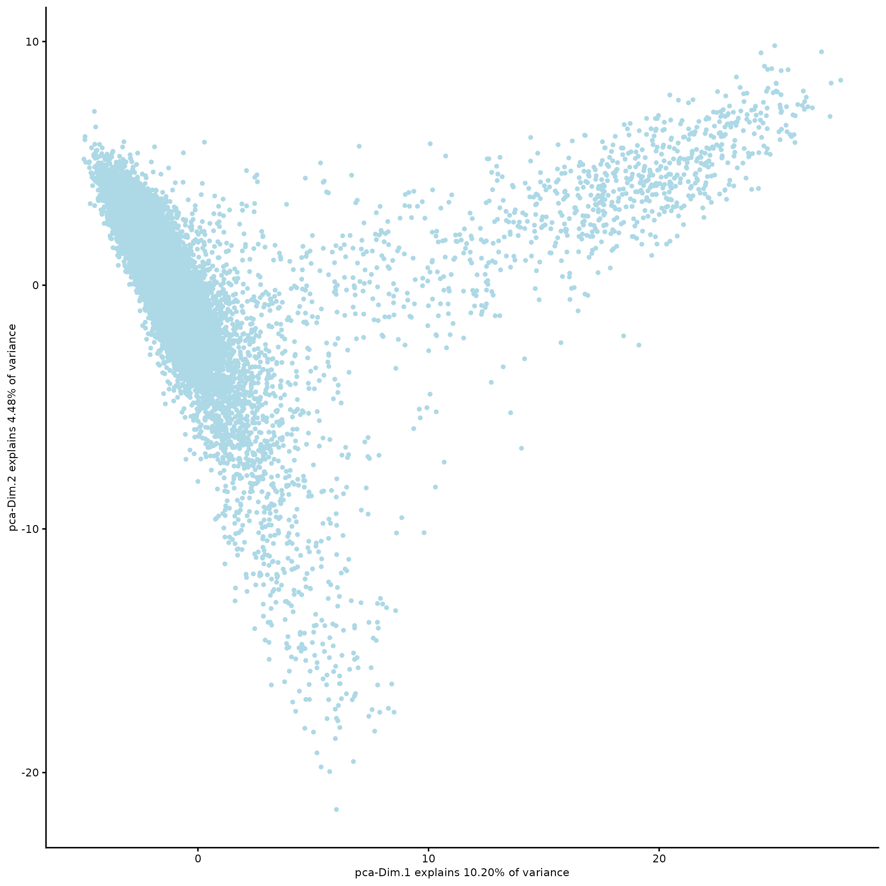
g <- runUMAP(g,
spat_unit = "hexagon100",
dimensions_to_use = 1:14,
n_threads = 10)
plotUMAP(g,
spat_unit = "hexagon100",
point_size = 2)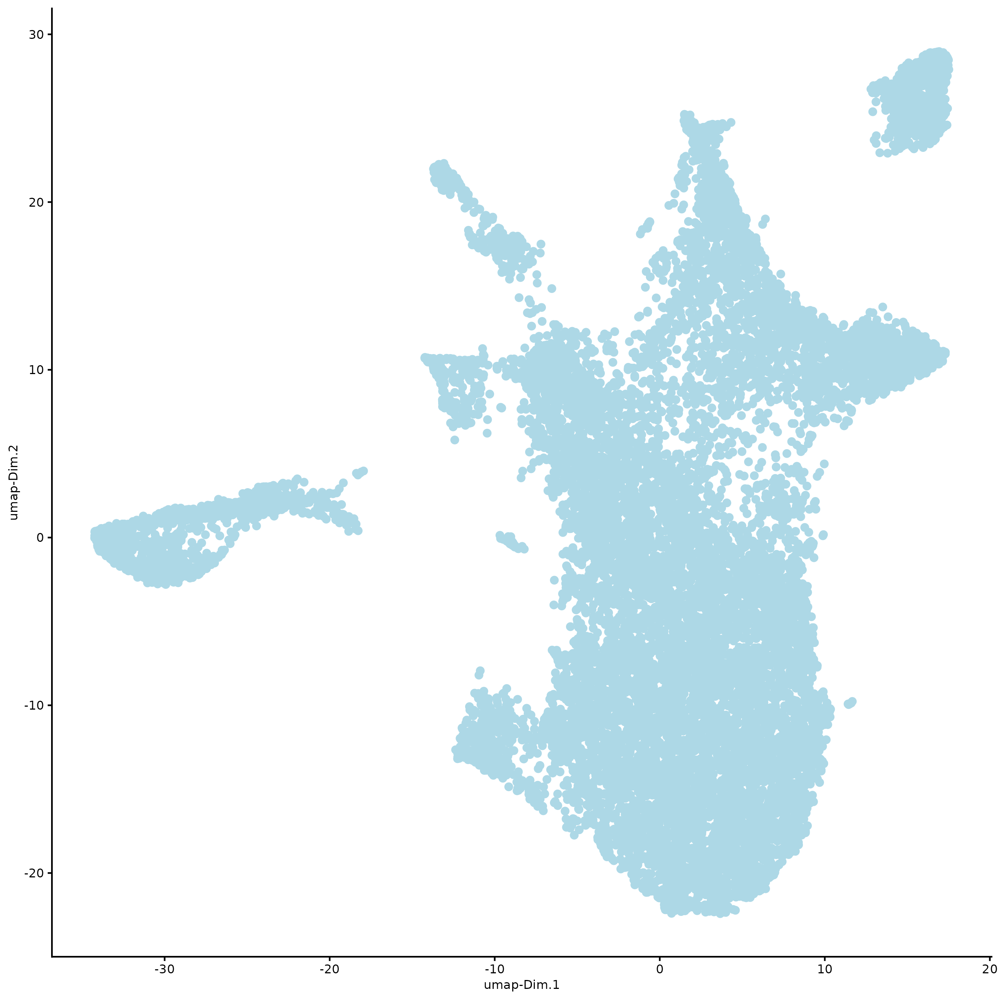
# sNN network (default)
g <- createNearestNetwork(g,
spat_unit = "hexagon100",
dimensions_to_use = 1:14,
k = 5)
## leiden clustering ####
g <- doLeidenClusterIgraph(g,
spat_unit = "hexagon100",
resolution = 0.2,
n_iterations = 1000)
plotUMAP(g,
spat_unit = "hexagon100",
cell_color = "leiden_clus",
point_size = 1.5,
show_NN_network = FALSE,
edge_alpha = 0.05)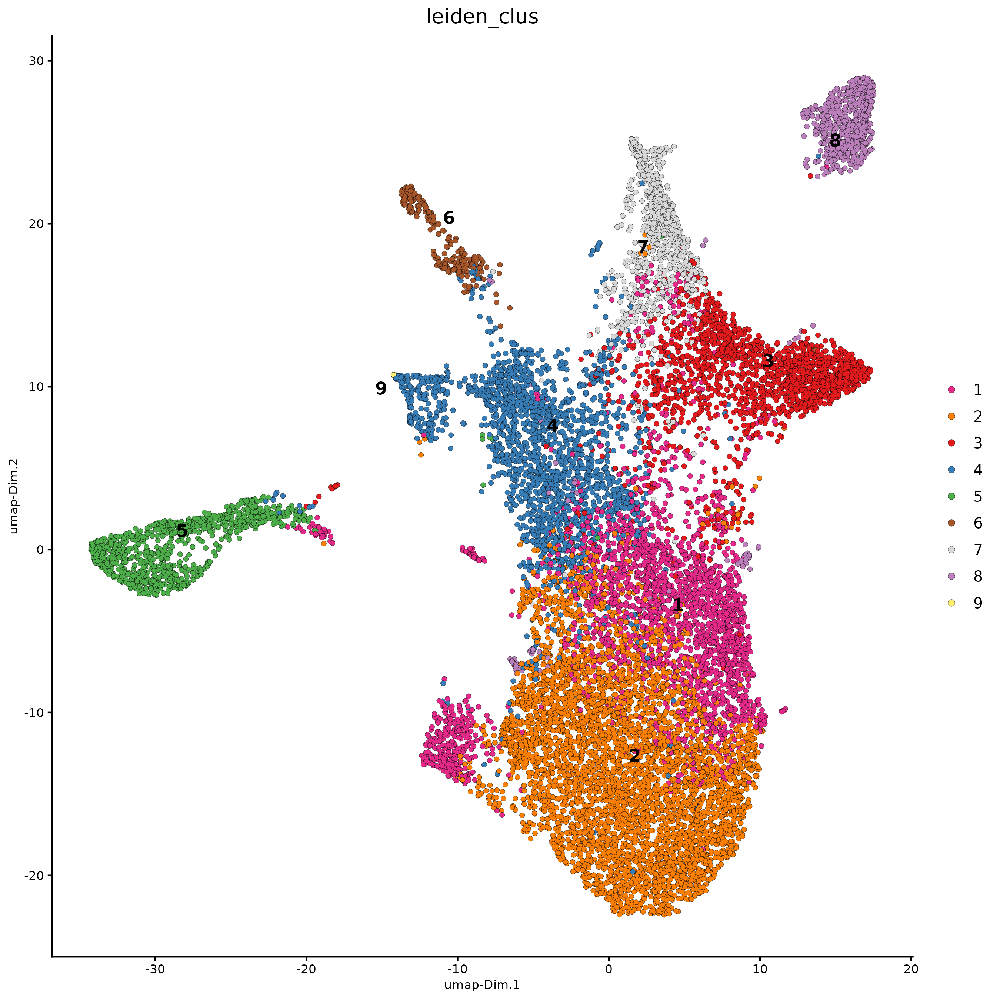
spatInSituPlotPoints(g,
show_image = FALSE,
feats = NULL,
show_legend = FALSE,
spat_unit = "hexagon100",
point_size = 0.5,
show_polygon = TRUE,
use_overlap = FALSE,
polygon_feat_type = "hexagon100",
polygon_fill_as_factor = TRUE,
polygon_fill = "leiden_clus",
polygon_color = "black",
polygon_line_size = 0.3
)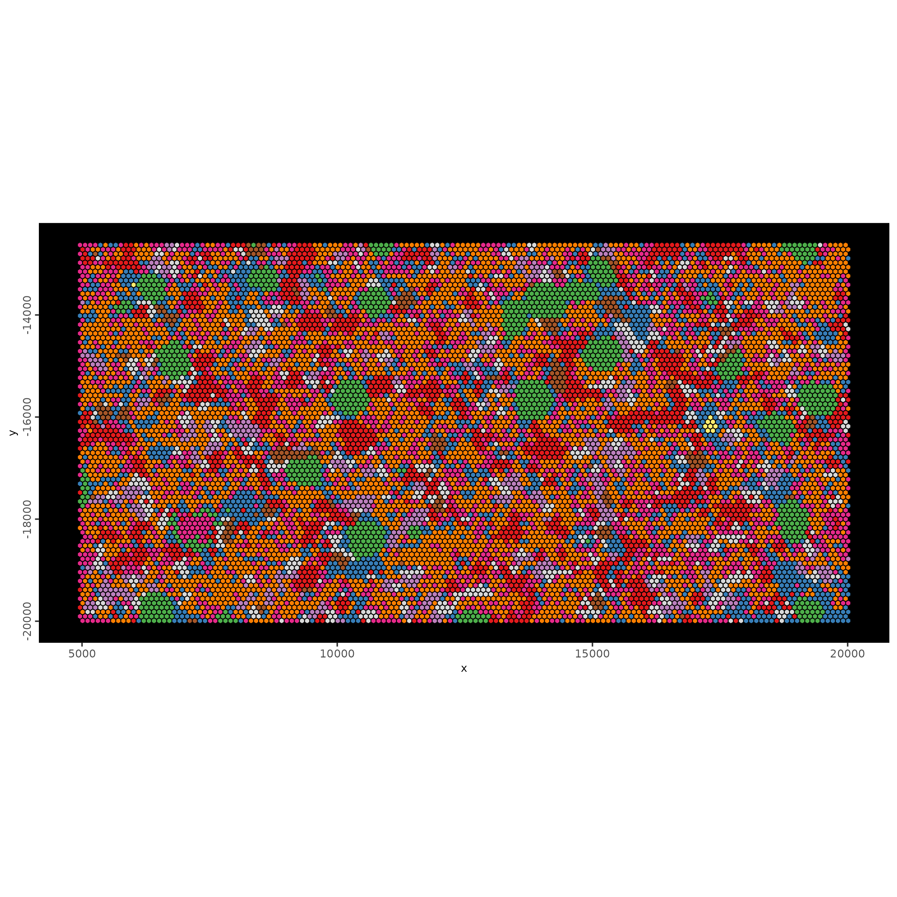
g <- createGiottoVisiumHDObject(
visiumhd_dir = data_path,
bin = 2,
create_tessellated_polys = TRUE,
tessellate_shape = "hexagon",
tessellate_shape_size = 25,
load_transcripts = TRUE,
filter = giotto_bounds,
instructions = instructions
)
g <- addSpatialCentroidLocations(
g,
poly_info = "hexagon25",
return_gobject = TRUE
)
feature_data <- fDataDT(g)
spatInSituPlotPoints(g,
show_image = TRUE,
feats = list("rna" = feature_data$feat_ID[10:20]),
show_legend = TRUE,
spat_unit = "hexagon25",
point_size = 2,
show_polygon = TRUE,
use_overlap = FALSE,
polygon_feat_type = "hexagon25",
polygon_bg_color = NA,
polygon_color = "black",
polygon_line_size = 0.2,
expand_counts = TRUE,
count_info_column = "count",
jitter = c(25, 25),
xlim = c(15000, 16000),
ylim = c(-20000, -19000)
)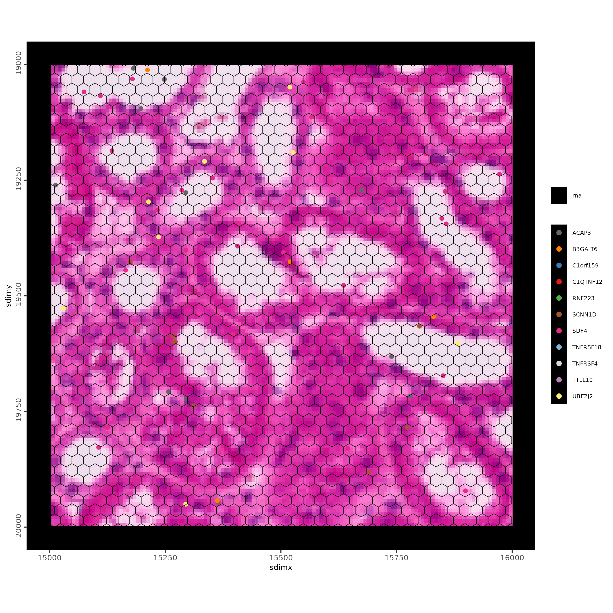